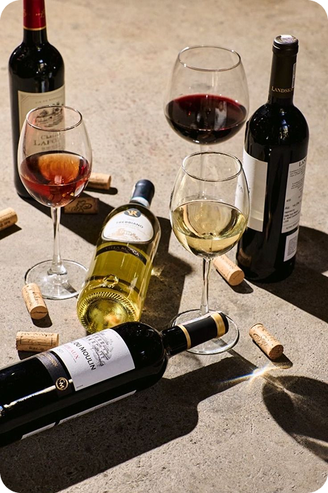
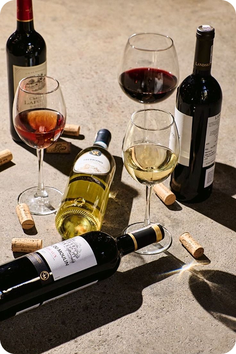

In our home of historic Bethlehem, Pennsylvania, our wine store was created in order to have the passion of wine thrive through buyers and sellers. Our main goal is to create good wine and share good moments with our loved ones around us in order to have our shop be the best it can possibly be. Bethlehem is known for it's good quality local shops being in the heart of the city to help locals truly understand love for the city. We create flavors and bottles with styles that stick out from the rest. Connecting with local costomers and wine collectors is what makes this truly a wonderful experience for all. We wish to create a welcoming environment for those who share a similar mindset and a similar passion. The Lehigh Valley community supports our shop for the best of our ability in order to show people around our community that wine may not be there just to drink, but to make memories and connections with loved ones. Whether you are coming in for your favorite bottle of wine, descovering something new, or you want to dive in to what fresh wine tasting may be like, we would love to offer the fresh new opportunity for you. Even if you are just here for the experience, connecting over a bottle may be your new way of hosting a party or being with loved ones. Being apart of Bethlehem and in the heart of the Moravian community, we hope that we welcome you into helpful arms to make the experience something that is truly unforgettable. Pop in to wine taste today, or book a session with us to make your experience even better! We celebrate our two year mark this coming March and would love to celebrate with you! RSVP by 1/15 to connect with us and learn more about our passion together.